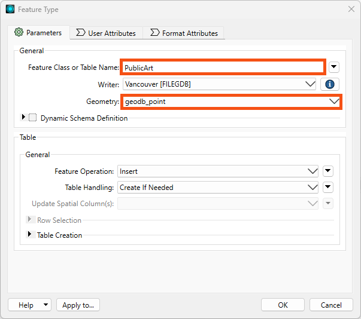
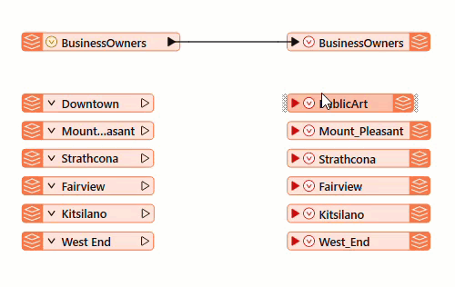

After completing this lesson, you’ll be able to:
When multiple streams connect to the same input port, the features accumulate. This operation is often called a union.
Sven opens FME Workbench (2024.0 or later) and continues to work on his Excel to geodatabase workspace. He realizes that with a separate writer feature type for each public art feature type, he will end up with many layers in the geodatabase, one for each neighborhood’s public art features. This corresponds to the Excel file's structure, with one sheet per neighborhood. However, in the geodatabase, he’d prefer all the public art to be stored in one layer called PublicArt.
To create a single feature type, he could add a new one, but he prefers to edit an existing one and then delete the others. He double-clicks on the Downtown writer feature type to open the writer Feature Type dialog and changes the Feature Class or Table Name to “PublicArt.”
Sven also noticed that the dialog's Geometry setting is red like it was with the BusinessOwners writer feature type. He needs to define what kind of geometry he wants this feature type to use. He sets it to “geodb_point,” as a point represents each art installation.

Sven clicks OK to accept the changes in the Feature Type dialog.
Sven then connects PublicArt to all of the neighborhood reader feature types by clicking on the red triangle going into PublicArt, holding down the CTRL key (⌘ or Shift on Mac), and clicking on each triangle coming out of the neighborhood feature types (Downtown, Mount Pleasant, Strathcona, Fairview, Kitsilano, and West End).

By creating these feature connection lines, Sven tells FME to route all features from these sources into a single destination. Features travel from left to right across the feature connection lines when the workspace runs.
Sven can now delete the writer feature types that are not connected (Mount_Pleasant, Strathcona, Fairview, Kitsilano, and West_End). He clicks and drags a rectangle around them, then right-clicks one of them and selects Delete.
The workspace is now ready to be run. Sven clicks on Run in the toolbar.
Sven selects the BusinessOwners writer feature type and clicks the Open Containing Folder icon. This opens the C:\FMEData\Output\Training folder where the data was written.
Sven sees the Vancouver.gdb file, which contains the BusinessOwners and PublicArt feature classes (feature classes are what feature types are called in a geodatabase). This confirms that the geodatabase was created in the correct folder, and Sven expects that the BusinessOwners and PublicArt feature classes are within the geodatabase. In the next lesson, he’ll inspect it to ensure the contents of Vancouver.gdb are correct by checking that there are two feature types (BusinessOwners and PublicArt), they have the correct schema (attribute names, types, and allowed geometries), and they contain the correct number of features.
Make sure you have followed along with Sven’s steps.